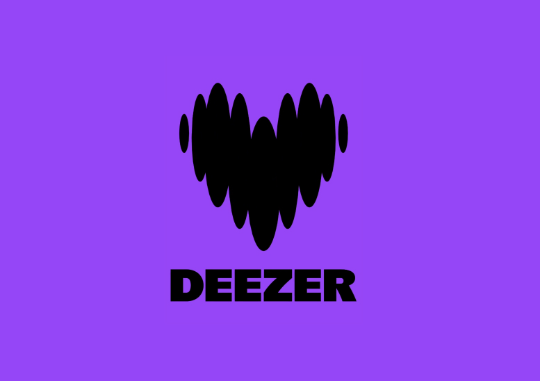
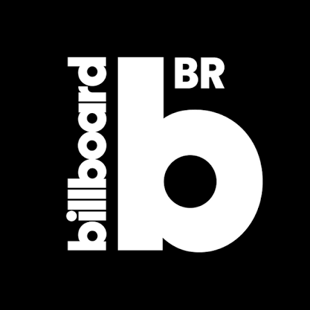

Batidão Tropical Vol. 2
Lançado em abril de 2024, Batidão Tropical Vol. 2 é o sexto álbum de Pabllo Vittar. O projeto celebra as raízes musicais do Norte e Nordeste brasileiro através do tecnobrega, forró e calypso unidos ao pop contemporâneo. Mesclando regravações nostálgicas de hinos de sua infância com faixas inéditas, o disco consolida a artista como uma das maiores vitrines da riqueza cultural das periferias do país.
patrimônio das pistas
O reencontro definitivo com as lendas e ritmos que formaram a maior drag queen do pop.


Além do topo das paradas
Veja as notas e análises que consagraram este um espetáculo de ritmo.
 ★★★★★
★★★★★
"Batidão Tropical Vol. 2 é considerado um dos melhores álbuns de Pabllo Vittar. Sua versatilidade e habilidade de referenciar alguns dos nomes mais importantes da música nortista e nordestina do país dão um significado muito importante em sua composição"
Persona | Jornalismo Cultural
9.2/10"Com maestria, o Batidão Tropical Vol. 2 demonstra que Pabllo Vittar consegue transitar naturalmente entre diferentes ritmos da música [...]. A versatilidade de Pabllo Vittar faz a artista despontar como um dos principais nomes da música brasileira contemporânea"
Comunidade Deezer
Essencial"Na segunda edição de projeto que celebra os gêneros do Nordeste e suas divas, Pabllo Vittar retorna mais autêntica e romântica como nunca"
Billboard Brasil